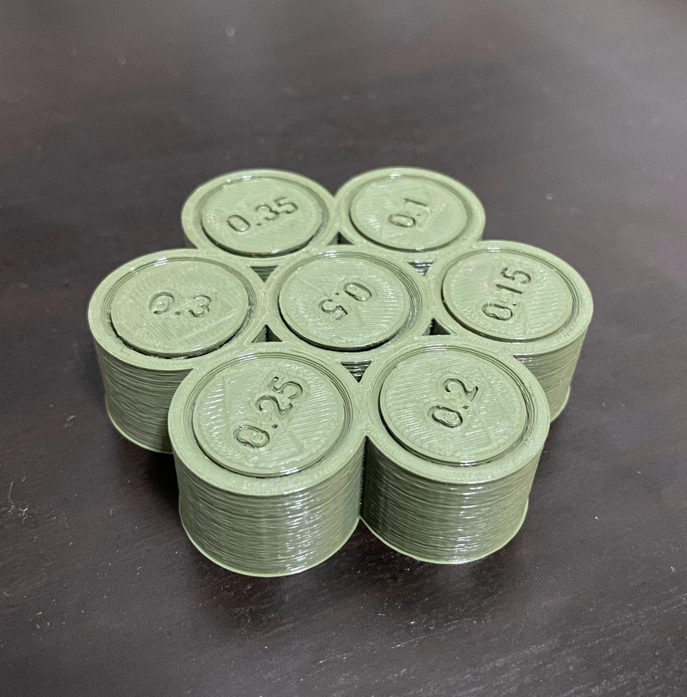
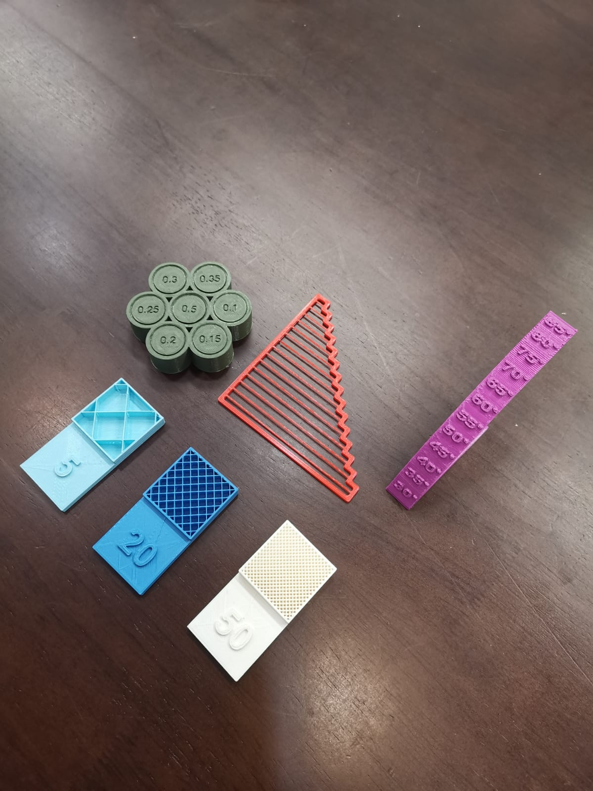

3D Printing
"3D printing or additive manufacturing is a process of making three dimensional solid objects from a digital file."
Group Project - 3D Printing Tests
Our group was tasked to create 3D printed objects that test the limits of 3D printing including bridging, tolerance, overhang and infill density. I was given the role of designing a test for tolerance, and here was my final product:

The tolerance test worked! Some of the holes were able to spin freely while some of the other holes either took a great amount of effort to spin or did not move at all. The tolerances grew tighter the smaller the number went, from 0.5 being the most loose to 0.3 being the most rigid, while the rest of the numbers did not turn at all.
Here is an image of all the tests put together:

Designing a Unique 3D Printed Object
One of our assignments was to design a 3D printed object that could not be machined or CNC milled, meaning that the object design was exclusive to 3D printing only. Thus, I decided to 3D print an object inside another object at one go, where the inner object could not be removed. Here is a screenshot of the product in Fusion 360: